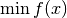

adam¶
- odl.solvers.smooth.gradient.adam(f, x, learning_rate=0.001, beta1=0.9, beta2=0.999, eps=1e-08, maxiter=1000, tol=1e-16, callback=None)[source]¶
ADAM method to minimize an objective function.
General implementation of ADAM for solving

where
 is a differentiable functional.
is a differentiable functional.The algorithm is described in [KB2015] (arxiv). All parameter names and default valuesare taken from the article.
- Parameters:
- f
Functional Goal functional. Needs to have
f.gradient.- x
f.domainelement Starting point of the iteration, updated in place.
- learning_ratepositive float, optional
Step length of the method.
- beta1float in [0, 1), optional
Update rate for first order moment estimate.
- beta2float in [0, 1), optional
Update rate for second order moment estimate.
- epspositive float, optional
A small constant for numerical stability.
- maxiterint, optional
Maximum number of iterations.
- tolpositive float, optional
Tolerance that should be used for terminating the iteration.
- callbackcallable, optional
Object executing code per iteration, e.g. plotting each iterate.
- f
See also
odl.solvers.smooth.gradient.steepest_descentSimple gradient descent.
odl.solvers.iterative.iterative.landweberOptimized solver for the case
f(x) = ||Ax - b||_2^2.odl.solvers.iterative.iterative.conjugate_gradientOptimized solver for the case
f(x) = x^T Ax - 2 x^T b.
References
[KB2015] Kingma, D P and Ba, J. Adam: A Method for Stochastic Optimization, ICLR 2015.